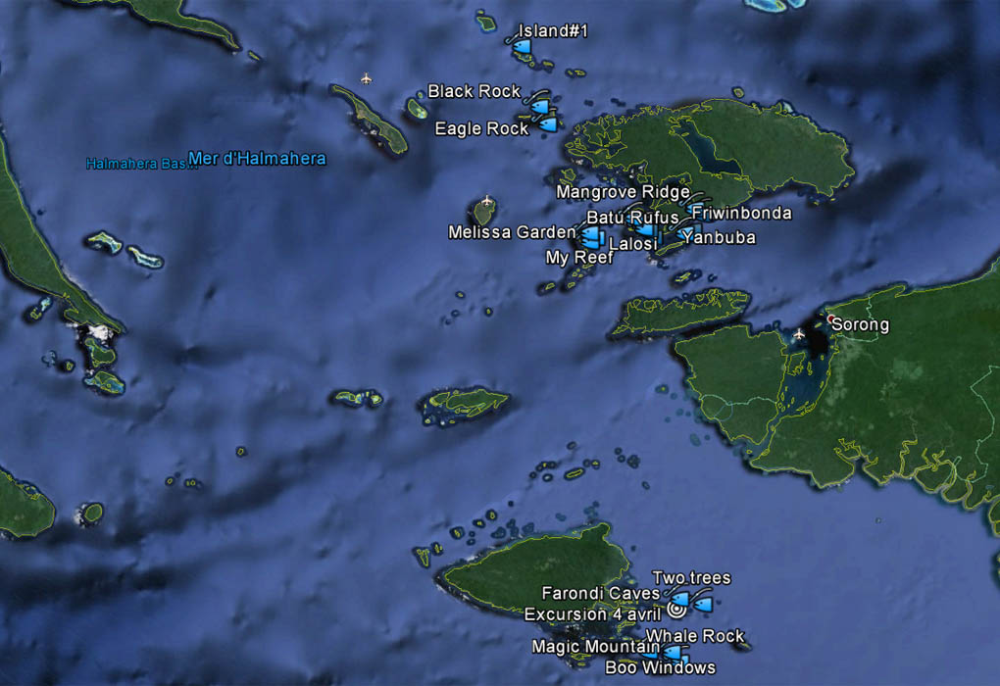

|
1er -17 avril 2014
Le voyage a commencé pour nous par la croisière sur le Mermaid 1 organisée pour le CERN SCUBA CLUB par Pierre Baehler (comme la précédente crpoisière à Komodo). Il s'est terminé par un séjour de 4 jours sur la petite ile de Bunaken (en face de Manado) dans un éco-lodge du nom de "Cha Cha". Nos compagnons de croisière ont tous fait l'inverse: Cha Cha d'abord et le Mermaid ensuite.
Donc après un vol Genève-Zurich-Singapour-Manado dans lequel on retrouve Olivier puis une nuit au Quality Hotel de Manado, nous rencontrons tous les autres le 1er avril à l'aéroport de Manado où nous prenons un ATR 72-500 de Wings Air qui nous emmène à Sorong oû le bateau nous attend.
Le bateau
Les participants
|
Lors de l'excursion sur Pindito Rock (il manque Yves qui n'a pas voulu escalader) |
Les plongées
 |
Toutes les plongées de la croisière |
| |
N° |
Date |
Lieu |
Latitude |
Longitude |
Temp.min. de l'eau |
01 |
03/04/2014 |
Two trees |
2°01.863’ S |
130°43.948’ E |
29°C |
02 |
03/04/2014 |
Whale Rock |
2°13.001’ S |
130°33.725’ E |
28°C |
03 |
02/04/2014 |
Nudi Rock |
2°12.000’ S |
130°33.730’ E |
29°C |
| 04 |
04/04/2014 |
Magic Mountain |
2°15.484’ S |
130°38.542’ E |
29°C |
05 |
04/04/2014 |
Boo windows |
2°13’11.86” S |
130°36’35.44” E |
29°C |
06 |
04/04/2014 |
Hidden lagoons od Farondi (boat trip) |
2°00.174’ S |
130°37.726’ E |
|
07 |
04/04/2014 |
Farondi caves |
2°00.570’ S |
130°38.389’ E |
29°C |
08 |
05/04/2014 |
Manta sandy (2 dives) |
0°35.282’ S |
130°32.081’ E |
29°C |
09 |
05/04/2014 |
Lalosi |
0°33’1.57” S |
130°30’0.73” E |
29°C |
10 |
06/04/2014 |
Eagle rock |
0°08.765’ S |
130°07.279’ E |
29°C |
11 |
06/04/2014 |
Black rock |
0°00.093’ S |
130°04.179’ E |
29°C |
12 |
06/04/2014 |
Palau Wajang (pedestrian trip) |
0°09.928’ N |
130°01.259’ E |
|
13 |
06/04/2014 |
Islandia |
0°10.173’ N |
130°01.116’ E |
29°C |
| 14 |
07/04/2014 |
Melissa's garden |
0°35.237’ S |
130°18.611’ E |
29°C |
15 |
07/04/2014 |
My reef |
0°36’0.48” S |
130°17’39.60” E |
29°C |
| 16 |
07/04/2014 |
Batu Rufus |
0°34’5.36” S |
130°17’10.34” E |
29°C |
17 |
08/04/2014 |
Mangrove ridge |
0°30.648’ S |
130°27.615’ E |
29°C |
| 18 |
08/04/2014 |
Citrus ridge |
|
|
29°C |
| 19 |
08/04/2014 |
Mayhem |
0°30.8119’ S |
130°26.3444’ E |
29°C |
| 20 |
08/04/2014 |
Sonek jetty |
0°28.0929’ S |
130°46.8751’ E |
29°C |
21 |
09/04/2014 |
Blue magic |
0°30.3305’ S |
130°44.2179’ E |
29°C |
22 |
09/04/2014 |
Mioskon |
0°29’43.86” S |
130°43’47.86” E |
29°C |
23 |
09/04/2014 |
Friwinbonda |
0°28.7590’ S |
130°41.5951’ E |
29°C |
24 |
10/04/2014 |
Cape Kri |
0°33’30.98” S |
130°41’27.69” E |
29°C |
25 |
10/04/2014 |
Yanbuba |
0°34’10.43” S |
130°39’41.15” E |
29°C |
Bunaken Cha Cha
Débarquement du Mermaid le 11 avril et retour par avion à Manado. Grosse discussion à l'aéroport de Sorong sur le poids des bagages: finalement, comme nos billets ont été pris en octobre 2013 nous avons droit à une franchise de 15 kg au lieu des 10kg règlementaires. A Manado, nous quittons les copains qui repartent vers Singapour et, après une heure d'attente à l'aéroport un taxi vient pour nous transporter Corinne et moi jusqu'au port oû un bateau plutôt pourri nous emmène à Bunaken .
|
Cha Cha : le lodge, la maison de Raf & Reiko et le bateau de plongée |
| |
|
| |
| |
A suivre ...
Album Photos
|

{kind=link}
{kind=link}
{kind=link}
{kind=link}
{kind=link}
{kind=link}
{kind=link}
{kind=link}
{kind=link}
{kind=link}
{kind=link}
{kind=link}
{kind=link}
{kind=link}
{kind=link}
{kind=link}
{kind=link}
{kind=link}
{kind=link}
{kind=link}
{kind=link}
{kind=link}
{kind=link}